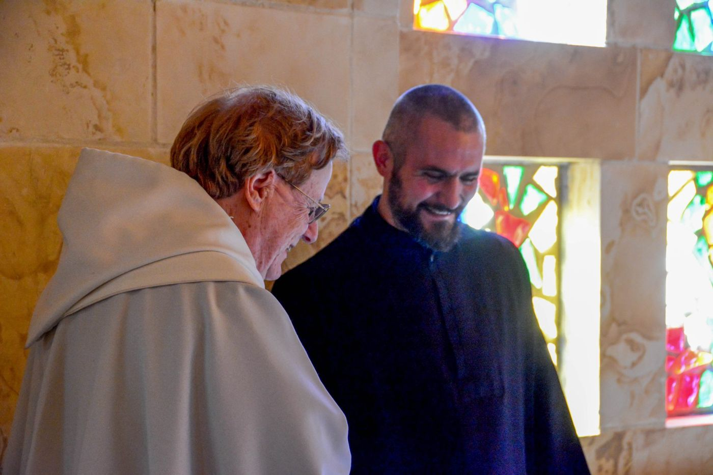

Give
Support the monks
Support the monks
Give online
Gifts to the monks of St. Bernard Abbey are received through Donorbox, once or monthly.
Mass intentions
Ask the monks to offer a Mass
Catholics have always asked priests to offer the Mass for a particular intention: for someone who is sick, for a family, for a person who has died. One of our priests will offer the Mass for your intention, and the whole community prays with him.
A gift, not a price
No one can buy a Mass, or grace, or prayer. The Mass is Christ's own sacrifice, offered freely to the Father; its grace is God's free gift and has no price. What the Church calls a Mass “offering” or stipend is a gift that helps support the priest and his community, the way the first Christians brought gifts to the altar for those who served it.
The Church's law says so plainly. It forbids “even the appearance of trafficking or trading” in Mass offerings (Code of Canon Law, canon 947), and it asks priests to offer Mass for the intentions of the faithful, especially the poor, even when they give nothing (canon 945 §2). So it is here: if you cannot make an offering, send your request anyway. Your Mass will be offered just the same.
How to ask
Write your intention (for example, “for the repose of the soul of John Smith” or “for the healing of Mary Jones”) and mail it to:
Stipendarius, Saint Bernard Abbey
1600 St. Bernard Drive S.E., Cullman, Alabama 35055
If you wish to include an offering, the customary amount is $10 for one Mass ($15 or $25 if you like) and $90 for a novena of nine Masses on consecutive days, by check made out to “St. Bernard Abbey”. Again: the offering is welcome, but it is never the condition.
Planned giving
The Clairvaux Society
The Clairvaux Society honors those who remember St. Bernard in their will or through a planned gift. Its foundation is an endowed fund: only its earnings are used for the work of the abbey and the school. You can also make a simple will for free through My Catholic Will.
Development Office: 256-739-6682